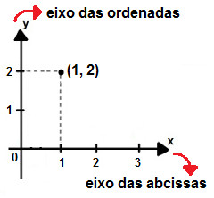

FUNÇÃO
O QUE É UMA FUNÇÃO?
Em diversas situações do dia a dia é possível perceber grandezas que, de certa maneira, estão relacionadas. Muitas dessas relações podem ser descritas por um conceito matemático denominado função.
Acredita- se que o termo função tenha sido introduzido na matemática por Gottfried Wilhelm Leibniz (1646 - 1716), mas a noção que temos atualmente de função só foi introduzida posteriormente por Leonhard Euler (1707 - 1783).
Considere os conjuntos A={0,1,4} e B={-1,0,2,5} e as seguintes relações de A em B:


● R1 é a função, pois cada elemento de A corresponde a um único elemento de B
● R2 não é função, pois existe elemento de A que não tem correspondente em B.
● R3 não é função, pois existe elemento de A que tem dois correspondentes em B.
Sejam os conjuntos A e B não vazios, uma relação f de A em B é uma função quando associada a um elemento x, do conjunto A, um único elemento y, de B.
GRÁFICO DE UMA FUNÇÃO
Em geral, os gráficos são utilizados para facilitar a exposição e compreensão de informações, sendo que muitos deles representam funções. Eles são criados no plano cartesiano que é estabelecido pelo encontro dos eixos cartesianos x e y, conhecidos como eixo das abcissas e eixo das ordenadas, respectivamente.
Cada ponto do gráfico é conhecido como par ordenado, pois ele é formado pelo encontro de um valor das abcissas com um valor das ordenadas. A linha que une os pares ordenados é conhecida como curva da função.
Vejamos por exemplo as seguintes funções:
=2x-3.jpg)
● A função f(x)=2x-3 é crescente em todo o domínio. Neste caso, dizemos que f é uma função crescente.
=-x+2.jpg)
● A função g(x)=-x+2 é decrescente em todo o domínio. Neste caso, dizemos que f é uma função decrescente.